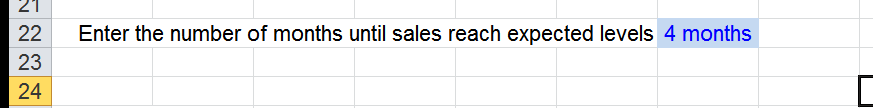
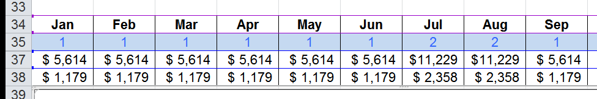

Section 4 ? Key Assumptions
Before finalizing your plan, be sure to review your sales forecast assumptions one more time to confirm:
A. The pricing seems reasonable.
B. The estimated cost to produce the goods or services is reasonable (COGS)
C. The number of sales to customers is supported by your market research.
The other refinement you can do to make your 1st year sales forecast more realist, is to take into account the 'ramp-up time' needed to gain customers and achieve your sales goals.
First, how many months will it take before you expect sales to reach ‘normal’ volumes you predicted in your annual sales forecast? Enter that on row 22.

Secondly, if you have a seasonal business, how does that change on a monthly basis? On the Key Assumptions worksheet on row 35 shown below. For 'typical' or average months, enter '1' for that month. Then, if a month is expected to be twice as good as a 'typical' month, enter '2'. You can use whatever multiplier you think reflects how much higher sales will be in each month compared to a 'typical' average sales month.
In the example below, all months except July and August are 'typical' months. Then July and August sales are expected to be twice as high. And again, you can enter 3 for three times, 4 for four times, 5 for five times and so on.

These estimates will automatically update the sales shown on the P&L tab!.
Review these assumptions and adjust as needed.